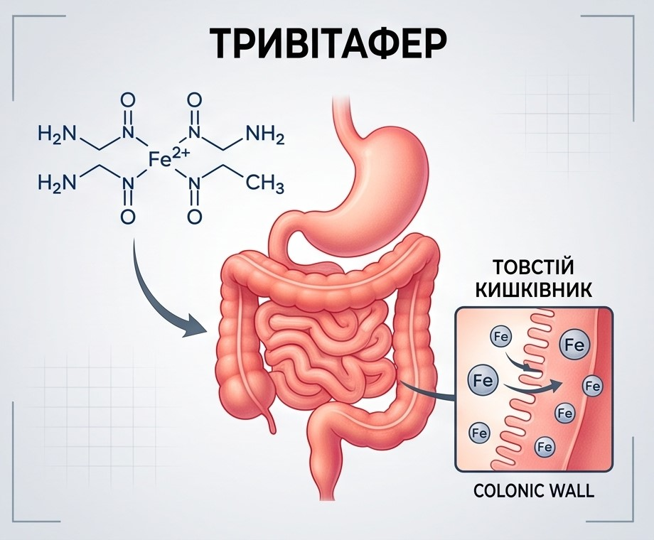

Травітафер
Травітафер - забезпечує високе засвоєння заліза без нудоти, запору та болю, тому що не залишає вільного іонного заліза в кишківнику.

Травітафер (таблетки №30)
Дієтична добавка на основі бісгліцинату заліза з високою біодоступністю
Сучасний залізовмісний комплекс для ефективної профілактики та корекції залізодефіцитних станів. Хелатна форма забезпечує високе засвоєння мікроелемента без подразнення слизової оболонки шлунково-кишкового тракту.

Склад та активні речовини
1 таблетка містить:
- Бісгліцинат заліза — 90 мг (у перерахунку на чисте залізо — 18 мг, що відповідає 128,6% від референсної величини споживання для дорослих осіб старше 18 років);
- Допоміжні речовини: наповнювач: мікрокристалічна целюлоза; антизлежувачі: стеарат кальцію, діоксид кремнію.
Властивості компонентів
- Бісгліцинат заліза: високобіодоступна хелатна форма заліза, сполучена з амінокислотою гліцином. Завдяки стабільній молекулярній структурі залізо не вступає передчасно у взаємодію з іншими компонентами їжі, добре переноситься організмом, не викликає металевого присмаку, нудоти, закрепів чи подразнення шлунка.
Рекомендації до застосування
- Профілактика та усунення латентного дефіциту заліза;
- Корекція залізодефіцитних анемій різного походження;
- Стани з підвищеною потребою в залізі (вагітність, період лактації, інтенсивні фізичні навантаження, рясні менструації).
Спосіб застосування та дози
Вживати дорослим (особам старше 18 років) згідно з рекомендаціями лікаря під час прийому їжі, запиваючи достатньою кількістю питної води. Курс прийому від 30 днів, далі визначається індивідуально з лікарем.
Протипоказання
Підвищена індивідуальна чутливість до компонентів продукту, вік до 18 років.